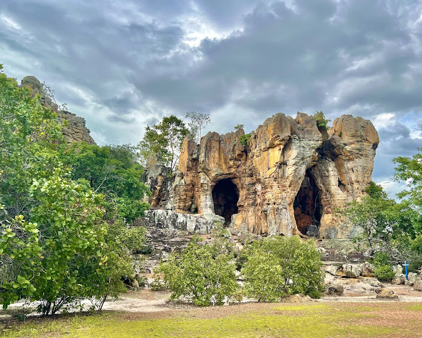
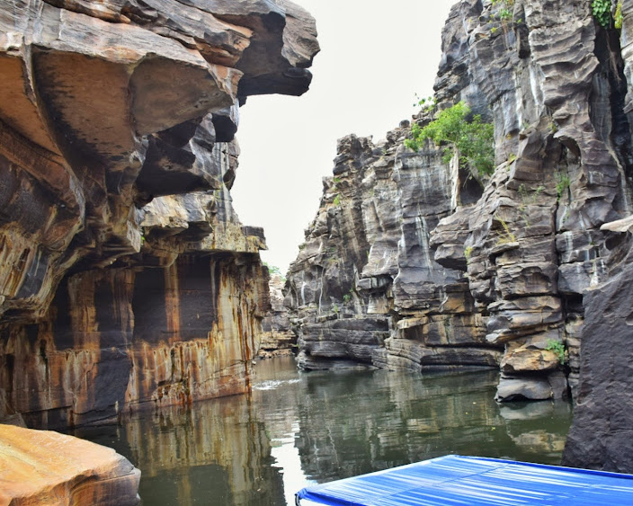
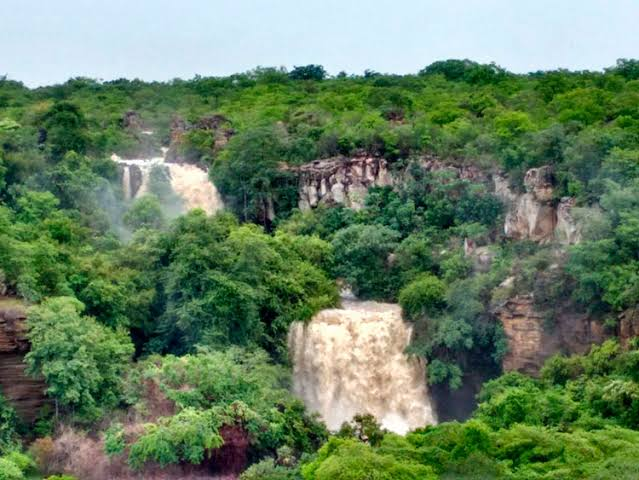
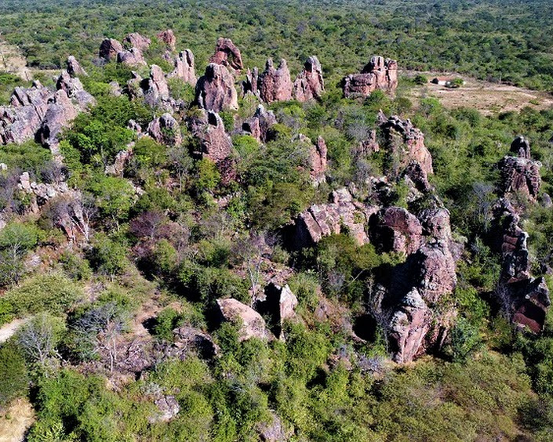

Pedra do Castelo

Local: Google, by Autor: Guia Edim.
A Pedra do Castelo é o maior símbolo turístico da região, apresentando uma formação rochosa que remete a um castelo medieval no meio do sertão. Com cerca de 20 metros de altura, o local encanta pelos seus salões internos e grutas esculpidas naturalmente pelo tempo. É um ponto obrigatório para quem busca entender as origens geológicas do Piauí e admirar as belas pinturas rupestres locais. O clima no interior das rochas é sempre fresco, oferecendo um refúgio agradável mesmo nos dias mais quentes do ano. Visitar este monumento é como voltar no tempo e sentir a força da natureza esculpindo todo o horizonte de Castelo.
Canio do Rio poti

Local: Google, by Autor: Evandro Lucena.
O Cânion do Rio Poti é um espetáculo da natureza escondido entre paredões de rocha que chegam a 60 metros de altura em sua extensão. O rio serpenteia por entre as fendas, criando um cenário de beleza rústica e imponente que atrai diversos aventureiros de longe. Durante o passeio de barco, é possível observar as marcas deixadas pela água nas pedras ao longo de muitos milênios de história. A fauna local se faz presente com aves raras que sobrevoam os paredões, tornando a experiência ainda mais imersiva e natural. É um lugar que transmite paz e magnitude, ideal para quem deseja se desconectar e mergulhar no coração piauiense.
Cachoeira das Arraias

Local: Google, by Autor: Cidade Verde.
A Cachoeira das Arraias é um verdadeiro oásis para quem busca se refrescar e aproveitar o melhor das águas em Castelo do Piauí. Com uma queda d'água volumosa e cercada por vegetação preservada, o local oferece piscinas naturais perfeitas para um banho calmo. O som da água caindo nas pedras cria uma trilha sonora relaxante que atrai turistas durante todo o período de cheia dos rios. Além do banho, as trilhas ao redor permitem observar a flora típica da caatinga e encontrar mirantes com vistas privilegiadas. A energia do lugar é contagiante, transformando qualquer passeio simples em uma memória inesquecível para os visitantes.
Picos dos André

Local: Google, by Autor: R. Santos.
Os Picos dos André representam uma das formações mais curiosas da nossa terra, com aglomerados de rochas que desafiam a gravidade. Do topo desses picos, é possível ter uma visão panorâmica em 360 graus de toda a beleza do sertão, sendo o lugar ideal para o pôr do sol. As trilhas que levam até o local passam por áreas de preservação onde a natureza se mantém totalmente intocada e cheia de vida. É um destino muito procurado por praticantes de trekking e fotografia devido às formas exóticas que as pedras assumem. Visitar os Picos é sentir a imensidão do mundo e a beleza singular que só o interior de Castelo possui.